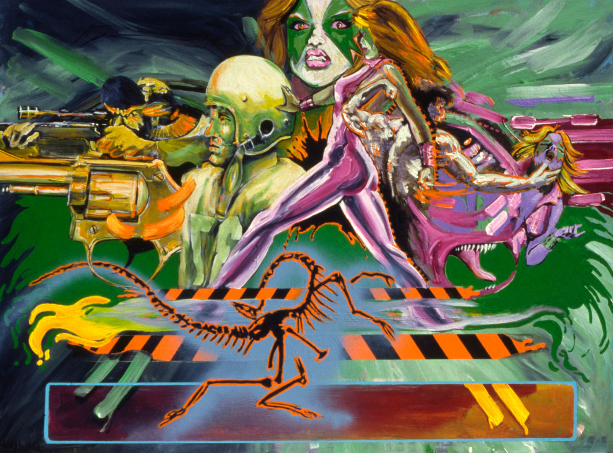

Provenance
Private collection.
Exhibitions
Dubious Edge, Theatre Gallery, Dallas, Texas, US, August 3–30, 1985.


Notes
Dimensions are approximate; measurements used here are based on visual comparison and available documentation.